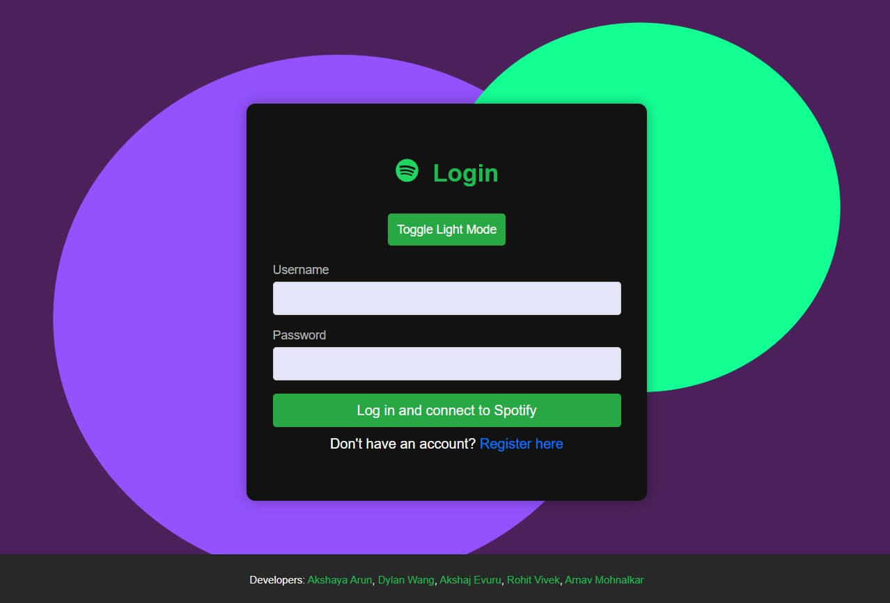
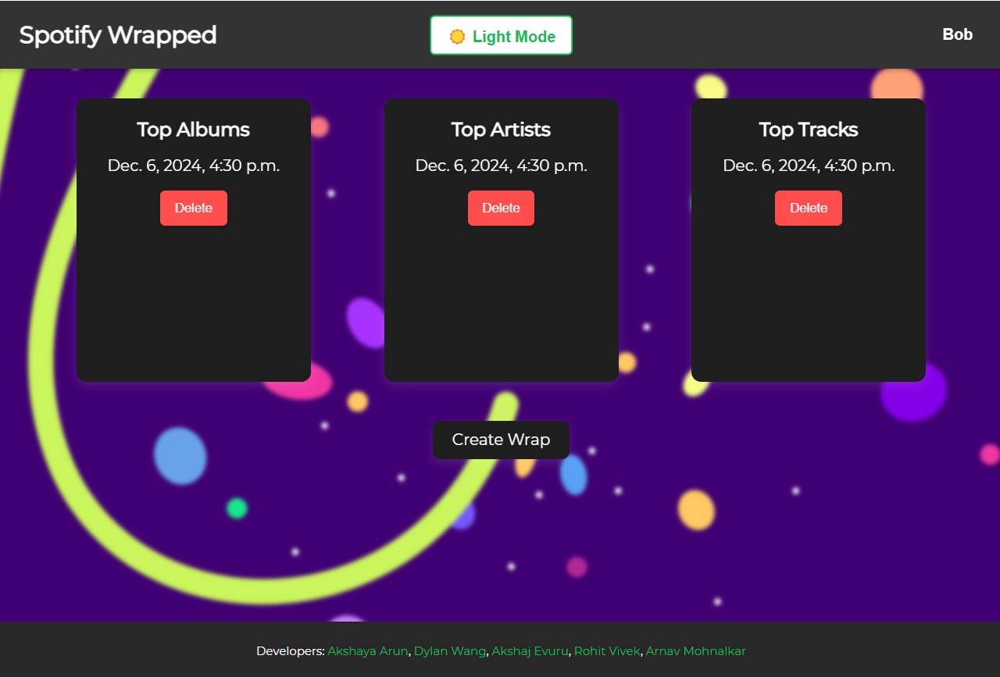

Self-Assessment Analysis
Rhetoric
One of my greatest areas of growth was in rhetoric, particularly in learning how communication must adapt to different audiences and purposes. In my career materials project, I shifted from simply listing experiences to framing them in ways that would be persuasive to recruiters and hiring managers. For example, in my resume I emphasized quantifiable impact through statements such as reducing discrepancies in internal pricing systems, allowing my technical contributions to be communicated in a results-oriented manner. Similarly, in my cover letter, I tailored my message specifically to Gemini by connecting my background to the company’s mission of bridging traditional finance with decentralized systems. In contrast, my technical crisis report required a more analytical rhetorical approach rather than persuasive self-promotion, as the purpose of the report was to objectively evaluate stakeholder communication during controversy. In that project, I examined how organizations such as Anthropic and the U.S. Department of Defense strategically framed information to influence public trust during controversy. For example, I explained how Anthropic avoided directly confirming involvement while emphasizing ethical safeguards, showing how communication can shape trust and accountability. Across these projects, I developed a stronger understanding of how tone, structure, and content must change depending on audience expectations and communication goals.
Process
My growth in process is reflected in how I approached revision and iterative improvement throughout the semester. Early in the course, I often focused primarily on including information rather than refining how effectively that information was communicated. Over time, I learned to revise with clearer rhetorical and usability goals in mind, treating writing as a process of refinement rather than a one-time draft. In my resume, for example, I revised bullet points from task-based descriptions into impact-driven statements, transforming vague descriptions into stronger professional accomplishments that better highlighted technical contributions and measurable outcomes. In my technical crisis report, I refined the structure of the document into clearly organized sections such as executive summary, methods, findings, and implications to improve logical flow and readability. After receiving feedback on the report, I also revised portions of the document to move beyond summarizing events and instead provide deeper rhetorical analysis of stakeholder communication strategies, ensuring that my writing focused more on interpretation and insight rather than description alone. Similarly, in my Bloomberg Terminal training materials project, I iteratively refined the organization and pacing of my instructional content to create a more intuitive learning flow, restructuring tutorials and step-by-step guidance so that new users could progress through the material more naturally. These revisions taught me to critically evaluate not only what information I include, but how that information is organized, framed, and tailored to maximize clarity and effectiveness for the intended audience. Overall, I developed a stronger understanding of writing as an iterative process in which feedback, reflection, and revision are essential to producing polished technical communication.
Modes & Media
My development in modes and media is evident in my growing ability to communicate technical information across multiple formats. In my technical crisis report project, I supplemented a detailed written analysis with a visual infographic that summarized the controversy’s timeline, stakeholder perspectives, and broader ethical implications. Creating the infographic required condensing dense analytical content into a more visually accessible format while preserving the core message for a broader audience. Similarly, in my Bloomberg Terminal training project, I developed structured instructional materials through a Notion-based platform that combined written explanations, step-by-step workflows, annotated screenshots, and AI-assisted instructional guidance. These materials were designed to support multiple learning styles and make a highly technical platform more approachable for novice users. Through these projects, I learned how integrating multiple communication modes can improve accessibility, engagement, and user comprehension.
Design
My growth in design is reflected in how intentionally I structured and presented information throughout the semester. I became more deliberate in applying principles such as visual hierarchy, chunking, consistency, and scannability to improve readability and user experience. In my resume, I used clear section headings, concise bullet points, and consistent formatting to create a document optimized for recruiter scanning behavior. In my infographic, I organized information into clearly separated sections such as timelines, stakeholder comparisons, and public opinion data, using spacing, contrast, and hierarchy to guide reader attention. In my Bloomberg Terminal training materials, I applied usability-focused design principles by using modular page structures, plain language instructions, and progressive step-by-step guidance to reduce cognitive load for new users. These design decisions helped me better understand how thoughtful presentation and organization directly influence the effectiveness of technical communication.
Professional Work
Spotify Wrapped Web Application
This project is a full-stack web application inspired by Spotify Wrapped that allows users to connect their Spotify accounts and generate personalized music summaries based on their listening history. Users can view insights such as top artists, tracks, albums, genres, and playlists across different time ranges, then save and revisit past wraps through an interactive dashboard. I developed the application’s backend logic, Spotify API integration, user authentication flow, and dashboard functionality while designing the system to create a smooth and engaging user experience. Building this project strengthened my understanding of how technical systems and interface design work together to communicate personalized data effectively. It also reinforced the importance of structuring information in ways that are intuitive, visually engaging, and meaningful to end users.


Amazon Allergen Alert Chrome Extension
This project is a Chrome extension designed to help users identify products that may contain common food allergens while shopping on Amazon. As users browse Amazon pages, the extension scans product and search-page content for allergen-related keywords and provides real-time alerts when potential matches are detected. It also maintains a live counter and popup interface to give users immediate visibility into flagged products during their browsing session. I led development of the extension’s detection logic, browser integration, and user interface, focusing on creating a lightweight tool that could deliver helpful information without disrupting the shopping experience. Building this project strengthened my understanding of how software can communicate critical information quickly and intuitively in real-time user environments, particularly when usability and clarity directly impact user decision-making.